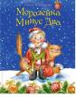

Деды Морозы бывают самыми разными: настоящими и ненастоящими, главными и местными, большими и маленькими. Различаются они и своей температурой: Главный Дед Мороз охлаждён до минус ста градусов, а малыш Морозейка проморозился только до минус двух, за что и получил своё прозвище. Старшие деды Морозы не хотят доверить малышу серьёзные дед-морозовские дела: он крошечного роста, и ещё не обучился всему волшебству, и постоянно простужается. Но отважный Морозейка всё равно стремится быть настоящим и разносить людям подарки. На своём пути он встречает добрых друзей, учится волшебству, попадает в опасные ситуации… И - кто знает! - может быть, ему удастся выполнить чьи-то самые заветные желания… Добрая сказка Ольги Колпаковой с весёлыми иллюстрациями Светланы Прокопенко подарит вам новогоднее настроение и веру в самые настоящие чудеса.